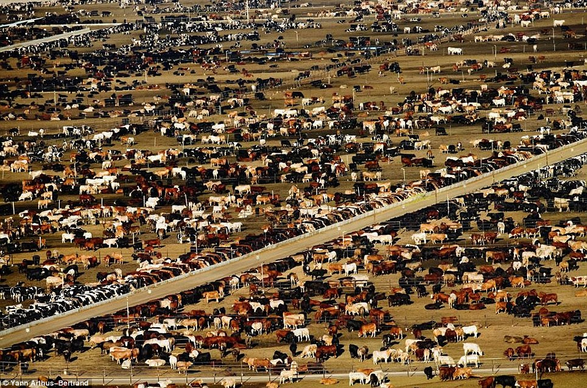
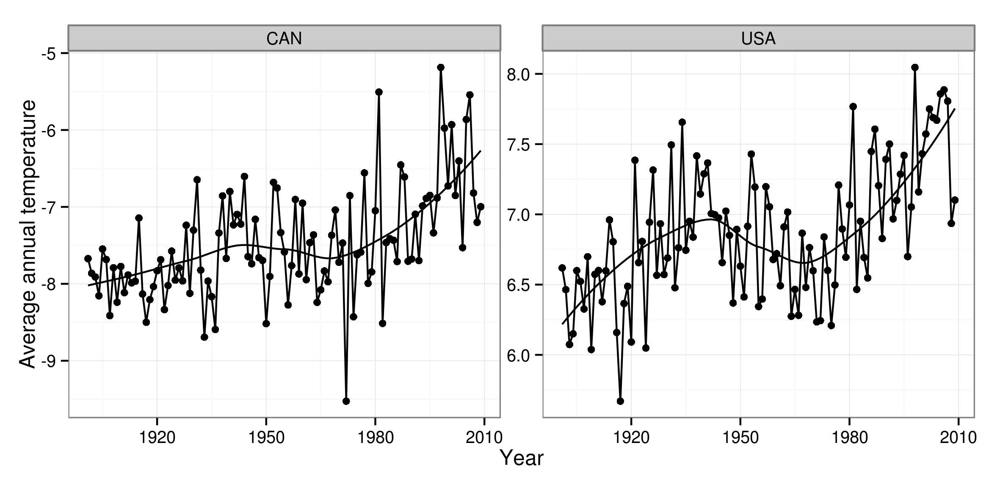
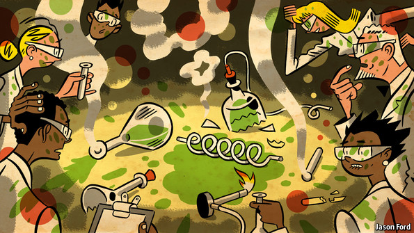
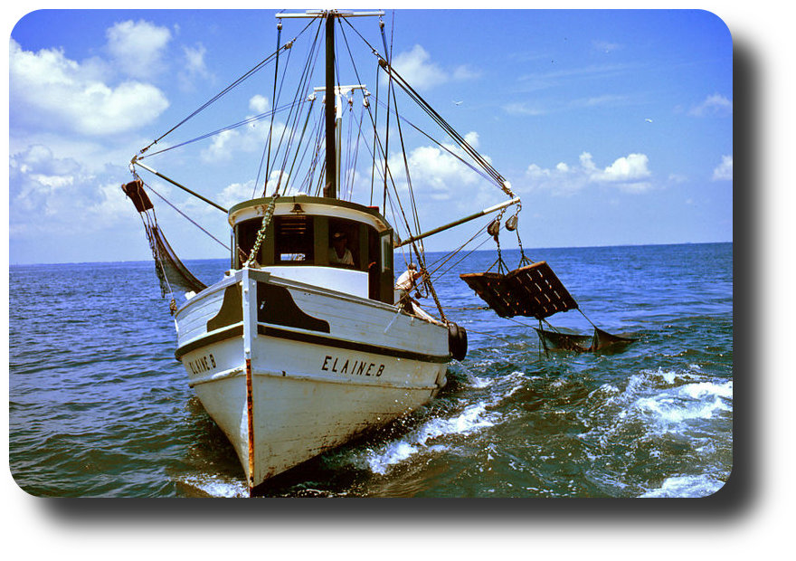
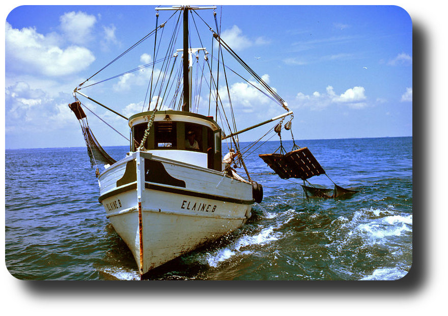

Massive Data Set
Management and Analysis in the Context of Global Change
Carl Boettiger, UC Santa Cruz
20 May 2014
Early warning signs?
Ecological management under uncertainty:
credit: NOAA
Decision Theory
Remote sensors
credit: NASA
micro sensors
credit: NSF
Computer simulations
credit: NERSC
Field-based study
credit: Scambos & Bauer, NSIDC
Big enough to be a problem
Different ways to be big
Volume
Variety
Velocity
data visualization
today the visualization and analysis component has become a bottleneck
Fox & Hendler (2011) doi:10.1126/science.1197654
Most scientific data is created in a form that facilitates its generation rather than focusing on its eventual use.
Fox & Hendler (2011) doi:10.1126/science.1197654
Factory Farm Data...

credit: Arthus-Bertrand
... Organic, hand-crafted variety
credit: Arthus-Bertrand
Vertically integrated data repositories
The rOpenSci project
building tools, building community
World Bank Climate Data (Example)
IPCC records and model projections at your fingertips
library ("rWBclimate" )
country.list <- c ("USA" , "CAN" )
country.dat <- get_historical_temp (country.list, "year" )
ggplot (country.dat, aes (x = year, y = data, group = locator)) +
geom_point () + geom_path () + xlab ("Year" ) +
ylab ("Average annual temperature" ) +
stat_smooth (se = F, colour = "black" ) +
facet_wrap (~locator, scale = "free" ) + theme_bw ()
World Bank Climate Data (Example)
IPCC records and model projections at your fingertips

UN FAO Fisheries data (Example)
library ("rfisheries" )
species <- of_species_codes ()
who <- c ("TUX" , "COD" , "VET" , "NPA" )
by_species <- lapply (who, function(x) of_landings (species = x))
names (by_species) <- who
dat <- melt (by_species, id = c ("catch" , "year" ))[, -5 ]
names (dat) <- c ("catch" , "year" , "species" , "a3_code" )
ggplot (dat, aes (year, catch)) + geom_line () +
facet_wrap (~a3_code, scales = "free_y" ) + theme_bw ()
UN FAO Fisheries data (Example)
Limitations to vertical integration
Quality vs Quantity
There are no good data, bad data
Some are just missing metadata
Communicating data limitations
effective interdisciplinary communication of data limitations with regard to, for example,
spatial and temporal sampling uncertainties;
instrument changes;
quality-control procedures; and, in particular,
what model-based climate predictions or projections do well and not so well.
Overpeck+ (2011) doi:10.1126/science.1197869
EML
Easy to use existing metadata
Easy to generate metadata
Easy to enhance & improve data with further annotation
Compare this to the standard publication...
How a new student sees a paper
How a leading professor sees it
Data sharing
Although research scientists have been the main users of these data, an increasing number of resource managers (working in fields such as water, public lands, health, and marine resources) need and are seeking access to climate data to inform their decisions, just as a growing range of policy-makers rely on climate data to develop climate change strategies
- Overpeck+ (2011) doi:10.1126/science.1197869
Data Sharing?
Whitehouse mandates
Journal mandates
Funder mandates
Speed of algorithms
credit: The Economist
Data synthesis is another bottleneck
Is today's research based on yesterday's data?
The exponential growth of data suggests that most of the data yet to come
Revisit and design today's analyses to account for tomorrow's data
Example: Synthetic analysis of biodiversity loss
Synthesizes over 140 data sets.
Finds no evidence for systematic loss
How easy would it be to update this to reflect new data?
Reproducible research
credit: The Economist

credit: The Economist
Velocity of data vs velocity of policy?
credit: Wikipedia
Conclusions
Global change problems are increasingly data driven, bringing new challenges and opportunities:
Volume: We often hit science bottlenecks before hardware bottlenecks.
Variety: We need metadata driven repositories for diverse data.
Velocity: Workflows for the data of tomorrow
Thank you
NSF
Sloan Foundation
NOAA / CSTAR
Karthik Ram
Scott Chamberlain
Ted Hart
Matt Jones
Marc Mangel
Links


 
